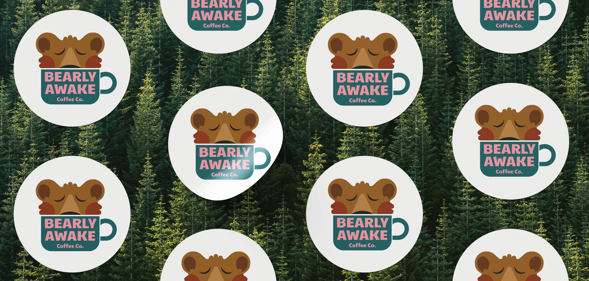
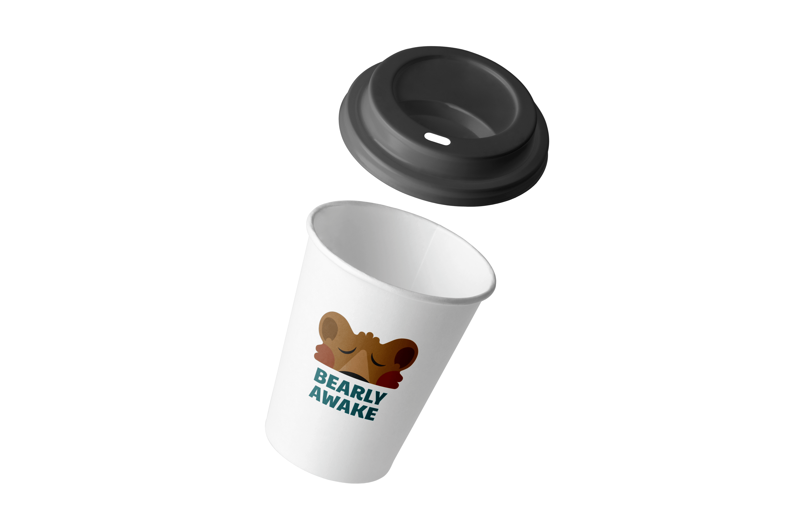
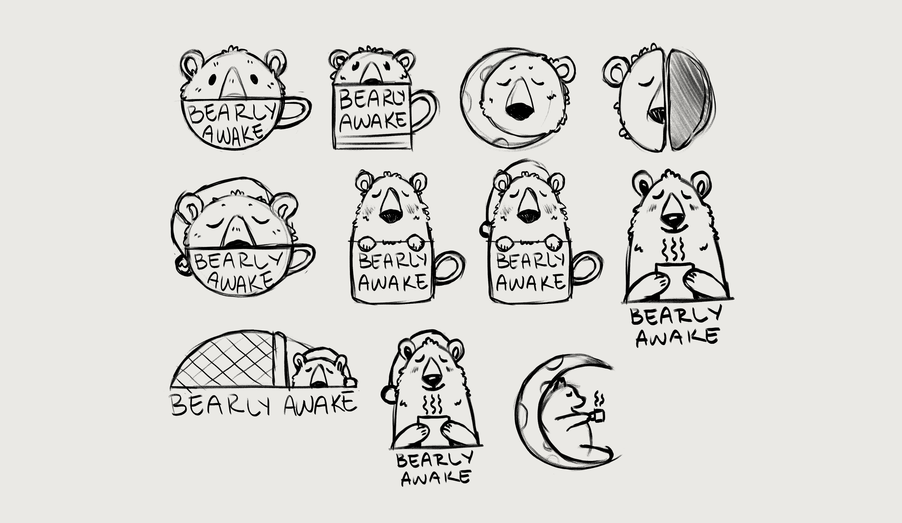
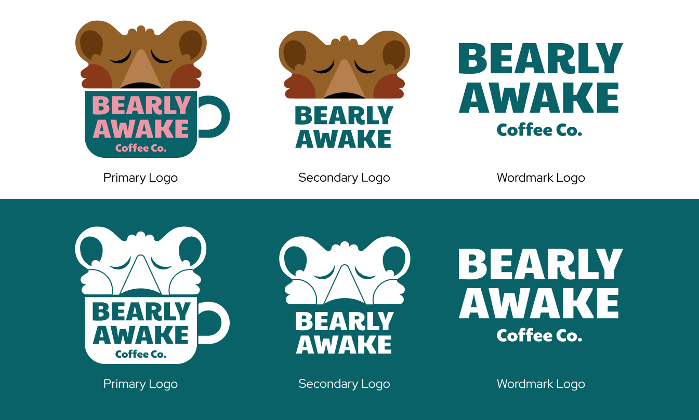
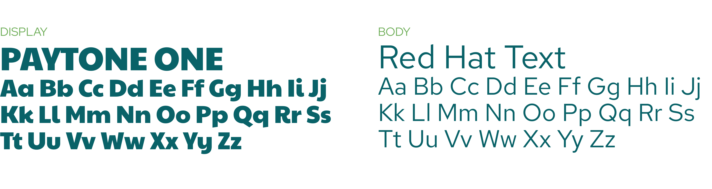
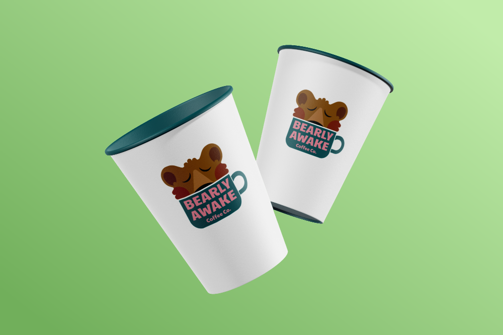
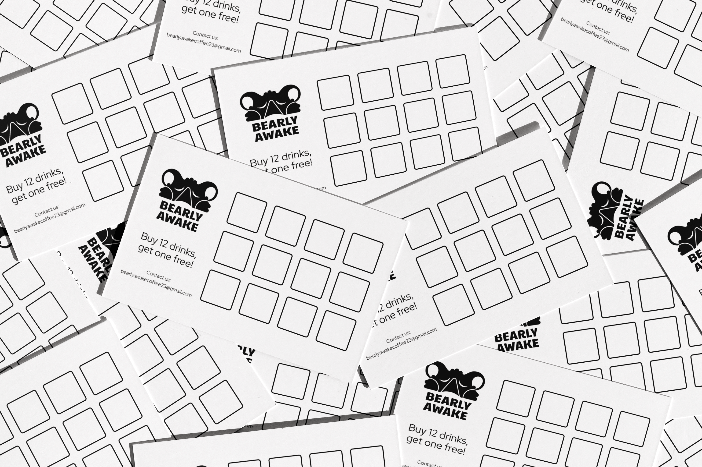
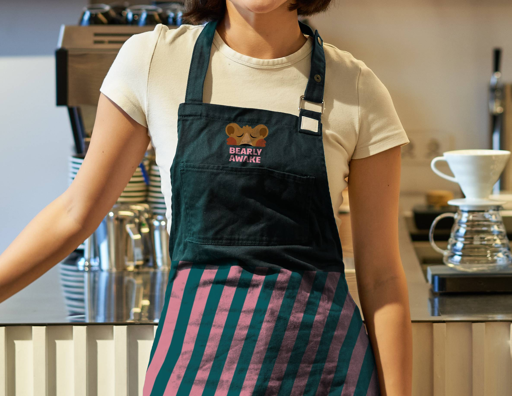

Bearly Awake
Bearly Awake Coffee Co. is a small coffee stand located on Whidbey Island in the Pacific Northwest. The owner came to me with a clear vision — she wanted a brand that felt fun, modern, and full of personality. The challenge was to create a visual identity that felt welcoming without leaning into the typical rustic and nature-based aesthetics of the category. The result is a bold, character-driven brand built around a sleepy bear who loves coffee just as much as the rest of us.



Process

Logo suite
The logo suite was designed to work across every surface the brand would live on — from a small cup sleeve to a large exterior sign. The primary logo leads with the bear mascot over a mug, creating immediate character recognition. The secondary mark strips it back to just the bear and wordmark for smaller applications. The wordmark gives the brand flexibility in purely typographic contexts like menus and signage where the illustration might compete with other visual elements.

Brand colors
Color was one of the most important decisions in this project. Most coffee brands in the Pacific Northwest lean heavily into natural tones. To stand out, we went the opposite direction. The teal anchors the brand with a sense of place, nodding to the waters surrounding Whidbey Island. The bright green adds energy and freshness, and the pink adds an unexpected pop that makes every touchpoint impossible to ignore. The warm brown ties back to the bear mascot and the coffee itself, grounding the palette in the product.
Typography

The brand system was applied across a full suite of touchpoints — cups, sleeves, stickers, posters, and exterior signage. Every application was designed to feel cohesive while giving each format room to breathe. The poster series in particular gave the brand a chance to turn up the volume, using large type and the mascot at full scale to create an environment around the coffee stand that draws customers in from a distance.




